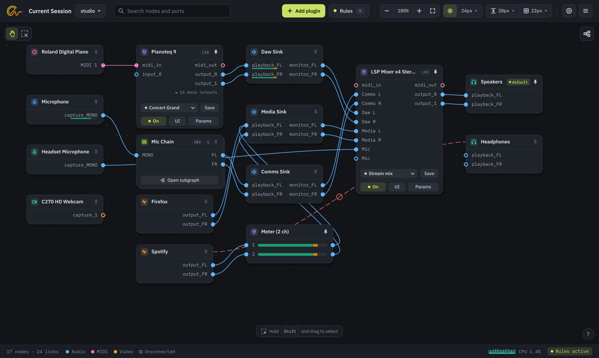
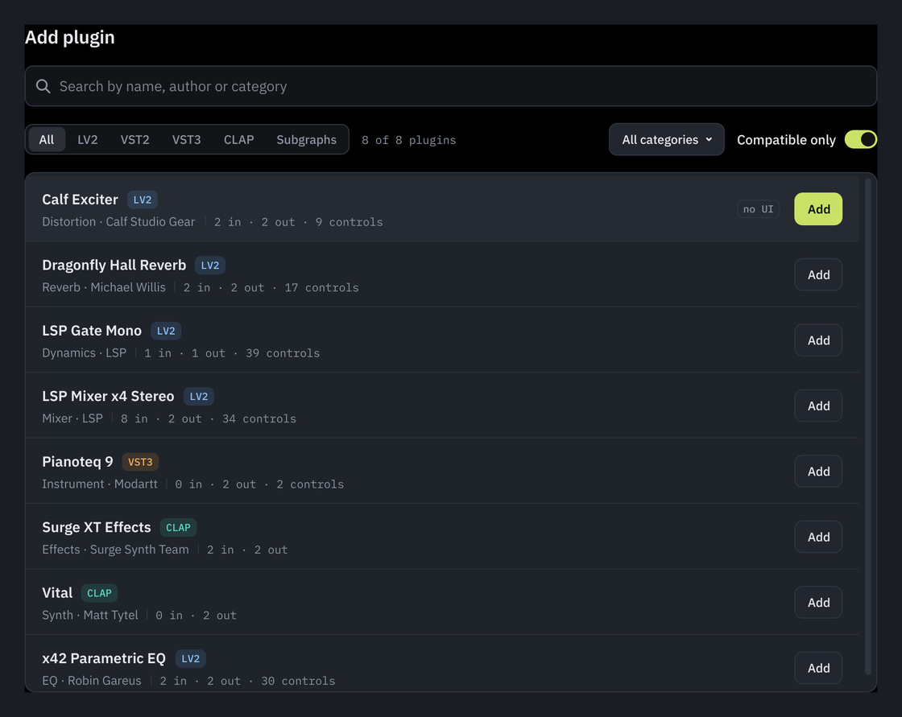
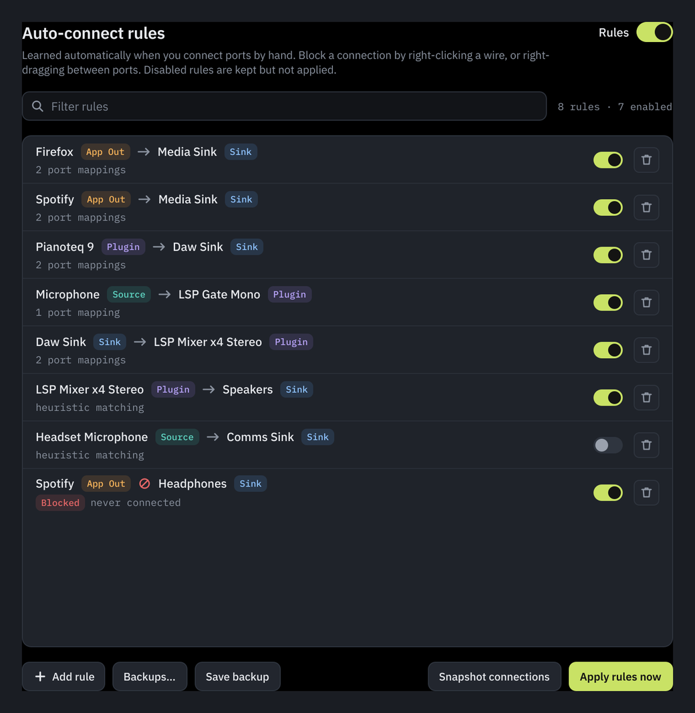
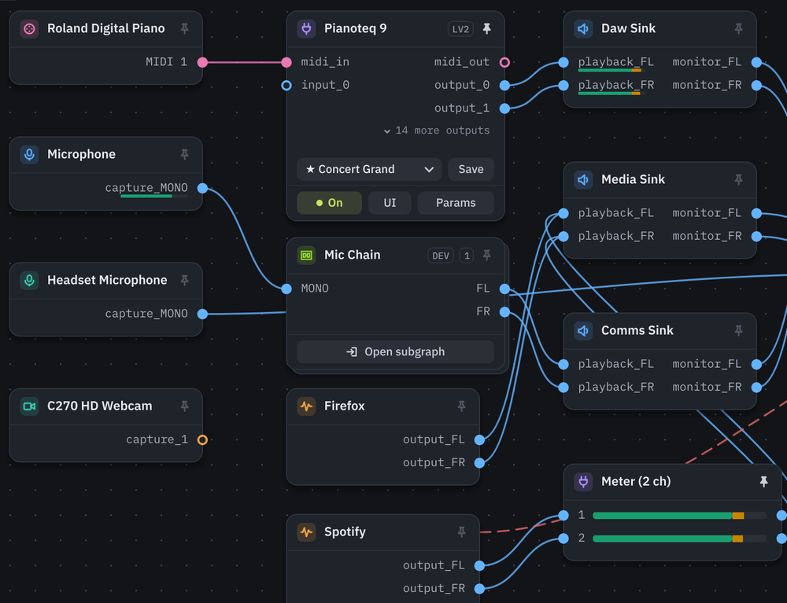
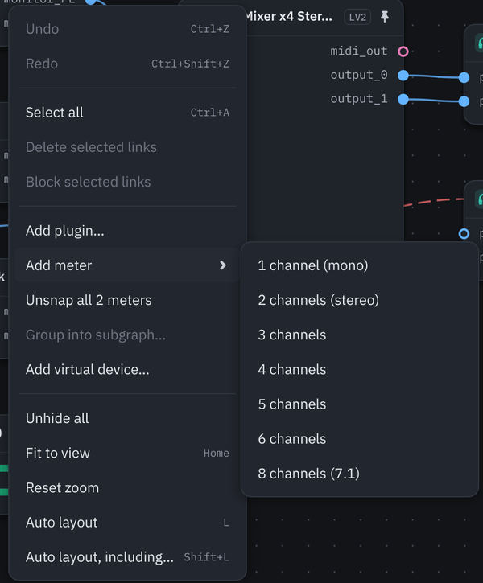
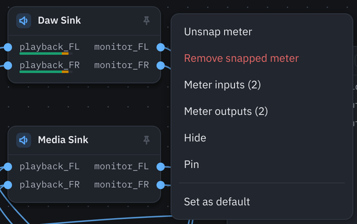
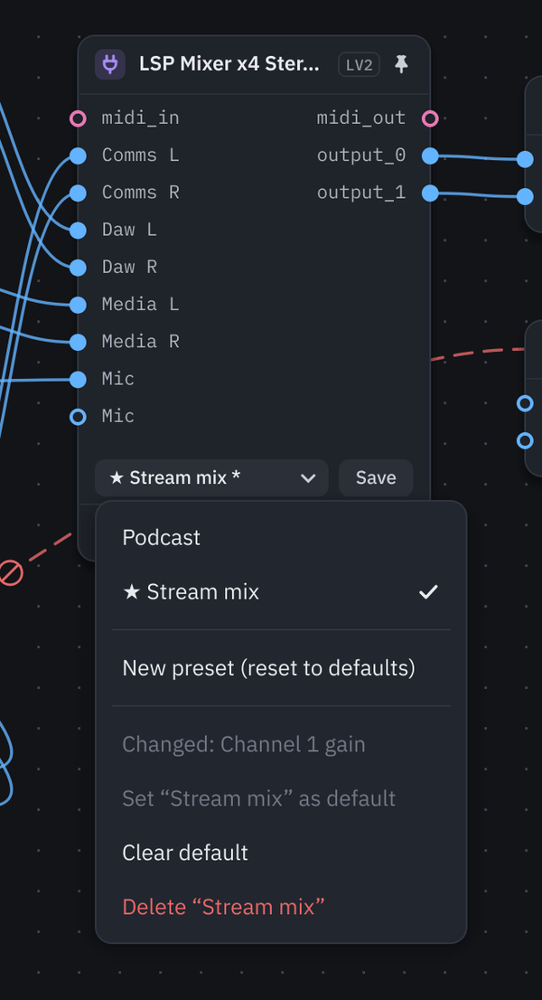
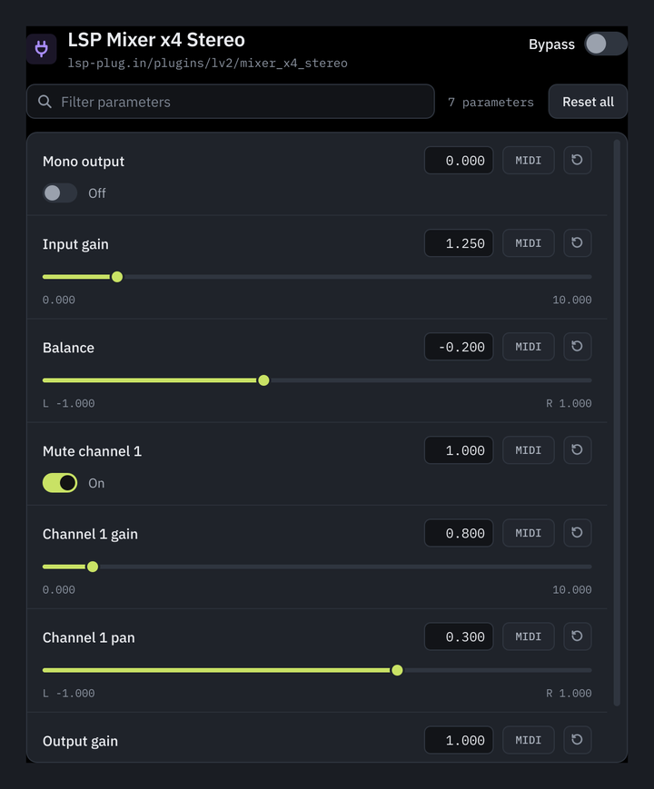
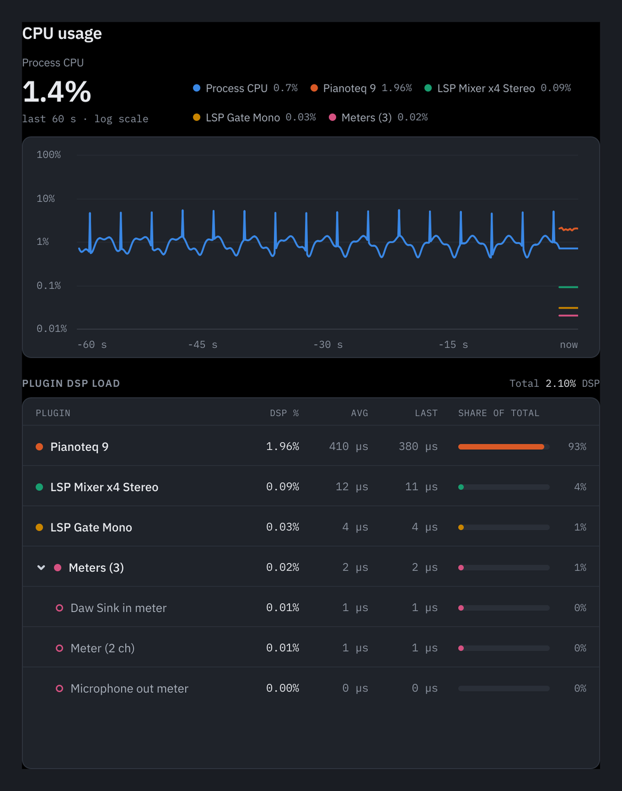
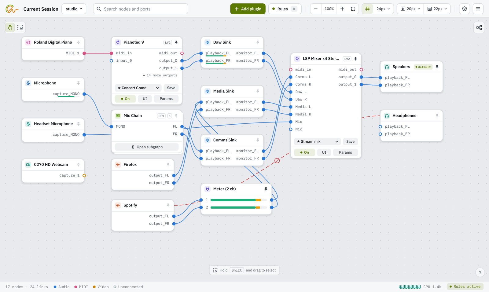

A PipeWire patchbay that hosts your plugins.
See every app, device and virtual sink on your Linux system as a node. Drag ports together. Drop LV2, LADSPA, VST2, VST3 and CLAP effects onto the wires. ZestBay remembers the routing and puts it back after a reboot, a replugged interface or an app restart.
sudo pacman -S zestbay

. Written in Rust with a Qt6 interface, talking to PipeWire through its own API. MIT licensed.
See everything
Every device, app stream, virtual sink and plugin is a node on one canvas. Wires are coloured by what they carry: audio, MIDI or video.
Wire it by hand
Drag from one port to another to connect them. Wires light up when the cursor gets close, so you can click one and press Delete without perfect aim. Drop a plugin on a wire and it is inserted right there.
Never wire it twice
Connect two ports once and ZestBay writes a rule for them. Block a pair and they stay apart. Plugins, MIDI maps and layout all come back when you restart.
It lives inside the PipeWire graph.
ZestBay is not a picture of your audio. Plugins are real filter nodes, virtual devices are real loopback modules, and every wire you draw is a real link.
PipeWire, natively
ZestBay uses PipeWire's own API, not the JACK layer. Streams, hardware and virtual sinks appear the moment they exist.
Plugins as filter nodes
Each LV2, LADSPA, VST2, VST3 or CLAP plugin is wrapped in a PipeWire filter node and runs in the real-time callback, with no locks on the audio path.
Rules that learn
Wire something by hand and a rule is written. Unwire it and the rule updates. Rules run again whenever the graph changes.
A session that saves itself
Plugins, parameters, wiring, MIDI maps and layout are written to ~/.config/zestbay as JSON. There is nothing to export.
Six threads and processes, joined by typed channels and lock-free atomics. No mutexes on the audio path.
- Qt/QML thread
- Runs the interface
- PipeWire thread
- Owns the graph and the real-time audio
- Tray thread
- Serves the system tray over D-Bus
- GTK thread
- Keeps native LV2 plugin windows alive
- zestbay-ui-bridge
- Hosts plugin windows in their own process
- Probe processes
- Test-load each plugin before it runs
No DAW to keep open. No config files to edit.
Five plugin formats, hosted inline
Put an EQ, a compressor or a reverb straight into the graph. LV2, LADSPA, VST2, VST3 and CLAP plugins all load as real PipeWire nodes, so nothing else has to be running.
- Search every installed plugin by name, author, category or format
- Open the plugin's own window, several at once, including plugins that open a window of their own. Most run in a helper process, so a crashing window can't take ZestBay down
- Bypass and rename each instance
- A plugin that crashes on load is skipped, not allowed to take ZestBay down


Rules you never have to write
ZestBay watches what you connect and turns it into rules. When a device or app shows up again, its wiring is already there.
- Match node names with * and ? patterns
- Exclusive mode keeps a source to exactly the connections its rules allow
- Block rules keep two things apart, even from your own mouse. They show as red lines you can select and delete
- Save named backups of the whole rule set
Meters on the wires
See where the sound is going and which links are silent. ZestBay has its own level meters: nothing to install, no window to open, and the audio passes through untouched.
- Right-click the canvas, then Add meter, and pick 1 to 6 or 8 channels. Drop it on a wire to splice it in
- Drag the meter onto the node before or after it and it snaps on: the card goes away and the bars sit under that node's port names
- Right-click any node, then Meter inputs or Meter outputs, to meter all its ports at once and move their wires through the meters
- Connect to a snapped port and the wire goes through the meter. Wires that skip it are dashed
- Peak level from −60 to 0 dBFS, green, amber above −12 and red above −3


A meter in two clicks
Add a mono, stereo or up to 7.1 meter from the canvas menu. It works like any plugin: drop it on a wire, rename it, hide it, put it in a subgraph. Removing it joins the wires back up.

Meter a whole device
Meter inputs or Meter outputs puts a snapped meter on every port of a node, eight channels per meter. Unsnap them to get the cards back, or remove them and the wiring is as it was.

Set a plugin up once
Save a plugin's settings as a preset and pick it on any other copy of that plugin. Make one the default and every new copy starts from it.

Map a knob in one click
Click Learn on a parameter, then move a knob or press a key on your MIDI controller. Mappings can be continuous, toggle or momentary, and they wait for an unplugged controller to come back.

See what each plugin costs
A CPU window charts every plugin's load over time, so you can tell which effect is eating the budget. Meters share one row; click it to list them.

Dark, light or whatever your desktop says
ZestBay follows your desktop theme, or you can pick one. It looks at home on KDE Plasma and other Qt desktops.
A canvas that copes with a crowd
- Grab and Select
- Drag the empty canvas to pan, or press W to draw a selection box instead. Hold Space to pan from anywhere, or Shift to box-select without switching.
- Auto layout
- One button at the top right, or press L. Nodes you pinned stay where you put them, and Shift+L lays out those too.
- Two densities
- Compact, Normal or Spacious, or any pixel value, for how far apart nodes sit and, separately, how big the node cards are.
- New nodes find a spot
- A stream that a rule connects lands beside the node it is wired to. Anything you placed or pinned stays put. A new node pulses once, and a marker at the edge points to it when it appears off screen.
- Undo and redo
- Ctrl+Z takes back a move, an auto layout, a wire you made or removed, a plugin you dropped on a wire, a meter you snapped, or a node you hid.
- Remove a plugin, keep the sound
- Take a plugin out of a chain and the wires on either side are joined back up.
- Delete does what you mean
- It disconnects the selected wires, removes plugins after asking, hides devices and app streams, and deletes the selected block rules.
- Long names
- The node under the cursor lights up. If its name does not fit the card, a popup shows all of it.
- Every shortcut
- Press ? or F1 for the full list, or click the question mark at the corner of the canvas.
Also in the box
- Sessions
- Keep whole setups as named sessions and switch between them live from the toolbar, or start one with --session.
- OSC control
- Switch plugins on and off, set parameters, apply presets and change session from another device over OSC. Links stay out of reach.
- Subgraphs
- Group a chain of plugins into one block, open it to edit, and save it as a template.
- Virtual devices
- Create virtual sinks and sources from the canvas menu.
- Chains as devices
- Offer a subgraph to apps as a microphone, and pick your "Mic Chain" in Discord.
- Port names
- Rename a plugin's ports from the right-click menu. The names are saved with the plugin and with its presets.
- Safe mode
- If restoring a session crashes, the next start offers the last plugin set that worked.
- Fast startup
- Saved plugins load straight away while the plugin scan runs in the background.
- Default node
- Choose where app streams go when no rule claims them.
- System tray
- Start minimised and keep your rules running in the background.
- Restart PipeWire
- One menu item restarts the audio stack when a device wedges. ZestBay reconnects itself.
- Search and layout
- Find nodes and ports with Ctrl+F, pin nodes in place, snap to a grid, or let auto layout follow the signal.
- Idle devices sleep
- Optionally let a device suspend when it is only linked through plugins.
- Unnamed streams
- Streams with no name of their own, such as pavucontrol's level meters, stay off the canvas.
- Zestins
- ZestBay's own LV2 plugins: utility, meter, EQ, gate, compressor, delay, reverb, tone generator, a synth and MIDI tools. A separate package that works in any LV2 host.
ZestBay next to the others
qpwgraph, Carla and Helvum are good tools. ZestBay sits between them: more than a graph editor, less than a full plugin host.
| Feature | ZestBay | qpwgraph | Carla | Helvum |
|---|---|---|---|---|
| Native PipeWire API | Yes | Yes | Through the JACK layer | Yes |
| Hosts plugins inline | As PipeWire filter nodes | No | In a rack | No |
| Plugin formats | LV2, LADSPA, VST2, VST3, CLAP | None | LADSPA, DSSI, LV2, VST2, VST3, AU | None |
| Opens the plugin's own window | Yes | No | Yes | No |
| Presets on the node | Shared by plugin type | No | Kept in project files | No |
| MIDI learn on any parameter | Yes | No | Yes | No |
| Rules learned from your wiring | Yes | Saved patchbay, no learning | Saved in the project | No |
| Block rules | Yes | No | No | No |
| Subgraphs and virtual devices | Yes | No | No | No |
| Switchable sessions | Live, from the toolbar or OSC | Patchbay files, connections only | Project files | No |
| OSC remote control | Plugins and sessions | No | Yes | No |
| Level meters in the graph | On a card, or snapped onto any port | No | In the plugin rack | No |
| CPU load per plugin | Charted over time | No | Yes | No |
| Survives a crashing plugin | Test-loads each plugin, with a safe mode | Hosts no plugins | Optional plugin bridges | Hosts no plugins |
| What it is | A patchbay with inline effects | A graph editor | A full plugin host with transport | A graph editor |
| Written in | Rust | C++ | C++ and Python | Rust |
A filled pin means yes and a hollow pin means no, the same way ZestBay draws connected and free ports. The other columns are mostly written from general knowledge of each project and not checked against their documentation; only the OSC, saved-patchbay and Carla plugin-format cells were looked up; open an issue if a cell is out of date.
It is not a DAW, on purpose.
ZestBay has no transport, no MIDI sequencer and no rack. If you need tracks and a timeline, use Carla. If you need routing that stays put, effects on the wires and a hardware knob on the compressor, ZestBay is the shorter path.
Install ZestBay
ZestBay finds the plugins your distro installs. Put your own in ~/.lv2, ~/.vst3 or ~/.clap. Windows VST2 plugins work through Wine and yabridge.
Arch Linux
In the official extra repositorysudo pacman -S zestbayUbuntu 24.04 and 26.04
Also Linux Mint and Pop!_OS, from the PPAsudo add-apt-repository ppa:lemonxah/tools
sudo apt update
sudo apt install zestbayDebian 12 and 13
Download the .deb from the latest releasesudo apt install ./zestbay_<version>-debian13_amd64.debZestins, optional
ZestBay's own LV2 plugins, a separate package. The .deb and .rpm files are on the latest release; on Arch build pkg/zestins with makepkg# Ubuntu, from the PPA
sudo apt install zestins
# Debian
sudo apt install ./zestins_<version>-debian13_amd64.deb
# Fedora
sudo dnf install ./zestins-<version>-1.fc<NN>.x86_64.rpm
# Anywhere, from the source tree (into ~/.lv2)
make -C zestins installFlatpak
Build the bundle from the repositoryjust flatpak-bundleFrom source
Needs Rust 1.88 or newer, Clang, CMake and the Qt6 headers, so install the packages below first. Fedora and Nix packaging is in pkg/git clone https://github.com/lemonxah/zestbay
cd zestbay
just installBuild packages: Debian
Install Rust with rustup, because the packaged rustc is too old on Debian 13. The QML modules are needed when ZestBay runssudo apt install build-essential pkg-config cmake clang libclang-dev \
libpipewire-0.3-dev qt6-base-dev qt6-base-private-dev qt6-declarative-dev \
qt6-declarative-private-dev liblilv-dev lv2-dev libsuil-dev libdbus-1-dev \
libx11-dev libgtk-3-dev
sudo apt install qml6-module-qtquick qml6-module-qtquick-controls \
qml6-module-qtquick-layouts qml6-module-qtquick-shapes \
qml6-module-qtquick-templates qml6-module-qtquick-window \
qml6-module-qtqml-models qml6-module-qtqml-workerscriptBuild packages: Ubuntu
The default rustc is too old on Ubuntu 24.04. Use rustup, or the versioned Rust packages the PPA build accepts. The QML modules are needed when ZestBay runs# Rust: versioned packages (or rustup)
sudo apt install rustc-1.91 cargo-1.91
sudo apt install build-essential pkg-config cmake clang libclang-dev \
libpipewire-0.3-dev qt6-base-dev qt6-base-private-dev qt6-declarative-dev \
qt6-declarative-private-dev liblilv-dev lv2-dev libsuil-dev libdbus-1-dev \
libx11-dev libgtk-3-dev
sudo apt install qml6-module-qtquick qml6-module-qtquick-controls \
qml6-module-qtquick-layouts qml6-module-qtquick-shapes \
qml6-module-qtquick-templates qml6-module-qtquick-window \
qml6-module-qtqml-models qml6-module-qtqml-workerscriptBuild packages: Fedora
Includes Rust and Cargosudo dnf install rust cargo clang cmake pkgconf-pkg-config pipewire-devel \
qt6-qtbase-devel qt6-qtdeclarative-devel lilv-devel lv2-devel suil-devel \
gtk3-devel libX11-devel dbus-develBuild packages: Arch Linux
Leave out rust if you manage your toolchain with rustupsudo pacman -S --needed base-devel rust clang cmake pipewire qt6-base \
qt6-declarative lilv lv2 suil gtk3 libx11 dbus